Chapter 1. 넘파이(Numpy)¶
1절. Numpy
2절. Numpy 함수
3절. Matplotlib
1절. Numpy¶
넘파이(Numpy)란?¶
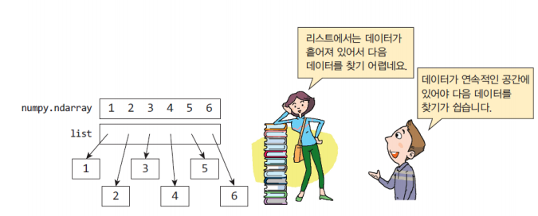
- 넘파이 라이브러리에는 다차원 배열 데이터 구조 포함
- 다양한 수학적 행렬 연산 수행 시 사용
딥러닝에서의 넘파이¶
- 왜 딥러닝에서 넘파이가 중요할까?
- 훈련 샘플이 2차원 or 3차원 행렬에 저장되기 때문
- 4차원 이상으로 넘어갈 시 값이 매우 커져서 오히려 구하기 힘듦
Numpy 모듈 불러오기¶
Numpy 모듈 사용 예시¶
- 2차원 배열에서의 사용
import numpy as np
b = np.array([[1, 2, 3], [4, 5, 6], [7, 8, 9]])
b
# array([[1, 2, 3], [4, 5, 6], [7, 8, 9]])
b[0][2]
# 3
- 배열의 인덱스는 일반적으로 0부터 시작
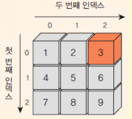
2절. Numpy 함수¶
넘파이 배열 속성¶
- 배열의 차원 및 항목 수는 형상(shape)에 의해 정의
- 배열의 형상은 각 차원의 크기를 지정하는 정수의 튜플
- 넘파이에서 차원은 축(axes)
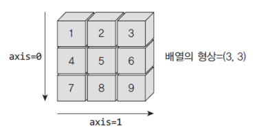
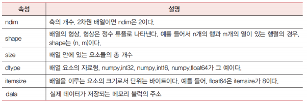
- 사용 코드
import numpy as np
a = np.array([[0, 1, 2], [3, 4, 5], [6, 7, 8]])
a.shape # 배열의 형상
# (3, 3)
a.ndim # 배열의 차원
# 2
a.dtype # 요소의 자료형
# dtype('int32')
a.size # 전체 요소의 개수
# 9
zeros(), eye(), ones() 함수¶
import numpy as np
# (3, 4)는 배열의 형상
# (행 개수, 열 개수)
np.zeros((3, 4))
# array([[0., 0., 0., 0.],
# [0., 0., 0., 0.],
# [0., 0., 0., 0.]])
np.ones((3, 4))
# array([[1, 1, 1, 1],
# [1, 1, 1, 1],
# [1, 1, 1, 1]])
np.eye(3)
# array([[1., 0., 0.],
# [0., 1., 0.],
# [0., 0., 1.]])
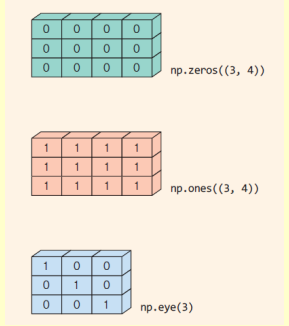
arange() 함수¶
import numpy as np
np.arange(5)
# array([0, 1, 2, 3, 4])
# 시작값을 지정하려고 할 경우
np.arange(1, 6)
# array([1, 2, 3, 4, 5])
# 증가되는 간격을 지정하려고 할 경우
np.arange(1, 10, 2)
# array([1, 3, 5, 7, 9])
linspace() 함수¶
import numpy as np
np.linspace(0, 10, 100)
# array([ 0. , 0.1010101 , 0.2020202 , 0.3030303 , 0.4040404 ,
# ...
# 8.08080808, 8.18181818, 8.28282828, 8.38383838, 8.48484848,
# 8.58585859, 8.68686869, 8.78787879, 8.88888889, 8.98989899,
# 9.09090909, 9.19191919, 9.29292929, 9.39393939, 9.49494949,
# 9.5959596 , 9.6969697 , 9.7979798 , 9.8989899 , 10.])
concatenate(), vstack() 함수¶
- 배열 Addition 함수
concatenate()¶
- 가로로 Addition
import numpy as np
x = np.array([[1, 2], [3, 4]])
y = np.array([[5, 6], [7, 8]])
np.concatenate((x, y), axis = 1)
# array([[1, 2, 5, 6],
# [3, 4, 7, 8]])
vstack()¶
- 세로로 Addition
import numpy as np
x = np.array([[1, 2], [3, 4]])
y = np.array([[5, 6], [7, 8]])
np.vstack((x, y))
# array([[1, 2],
# [3, 4],
# [5, 6],
# [7, 8]])
reshape() 함수¶
import numpy as np
a = np.arange(12)
# array([0, 1, 2, 3, 4, 5, 6, 7, 8, 9, 10, 11])
# a에 대하여 reshape(3, 4)를 호출하면 2차원 배열로 변형
a.reshape(3, 4)
# array([0, 1, 2, 3],
# [4, 5, 6, 7],
# [8, 9, 10, 11])
# reshape() 함수의 매개 변수(parameter)의 곱을 요소의 전체 개수와 맞출 경우
# 하나의 매개 변수만 작성 후 다른 매개 변수를 -1로 쓰더라도 정상적인 넘파이 배열 출력 가능
a.reshape(6, -1)
# array([0, 1],
# [2, 3],
# [4, 5],
# [6, 7],
# [8, 9],
# [10, 11])
split() 함수¶
- 배열 분할 함수
import numpy as np
array = np.arange(30).reshape(-1, 10)
array
# array([[0, 1, 2, 3, 4, 5, 6, 7, 8, 9],
# [10, 11, 12, 13, 14, 15, 16, 17, 18, 19],
# [20, 21, 22, 23, 24, 25, 26, 27 , 28, 29]])
arr1, arr2 = np.split(array, [3], axis = 1)
# 두 번째 매개 변수를 기준으로 잘라짐
arr1
# array([[0, 1, 2],
# [10, 11, 12],
# [20, 21, 22]])
arr2
# array([[3, 4, 5, 6, 7, 8, 9],
# [13, 14, 15, 16, 17, 18, 19],
# [23, 24, 25, 26, 27, 28, 29]])
newaxis 함수¶
- 배열에 새로운 축 추가 함수
import numpy as np
a = np.array([1, 2, 3, 4, 5, 6])
a.shape
# (6,)
# 1차원 함수
a1 = a[np.newaxis, :]
a1
# array([[1, 2, 3, 4, 5, 6]])
a1.shape
# (1, 6)
# 2차원 함수이며 행이 1, 열이 6
a2 = a[:, np.newaxis]
array([[1],
[2],
[3],
[4],
[5],
[6]])
a2.shape
# (6, 1)
# 2차원 함수이며 행이 6, 열이 1
넘파이 인덱싱과 슬라이싱¶
- 1차원 배열
import numpy as np
ages = np.array([18, 19, 25, 30, 28])
ages[1:3]
# array([19, 25])
# 인덱스 1 ~ 인덱스 2까지
ages[:2]
# array([18, 19])
# 인덱스 0 ~ 인덱스 1까지
# 논리적인 인덱싱(logical indexing)
y = ages > 20
y
# array([False, False, True, True, True])
ages[ages > 20]
# array([25, 30, 28])
- 2차원 배열
a = np.array([[1, 2, 3], [4, 5, 6], [7, 8, 9]])
a[0, 2]
# 3
a[0, 0] = 12
a
# array([[12, 2, 3],
# [4, 5, 6],
# [7, 8, 9]])
a[0:2, 1:3]
# array([[2, 3],
# [5, 6]])
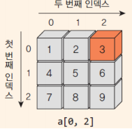
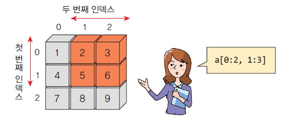
- 2차원 배열의 슬라이싱
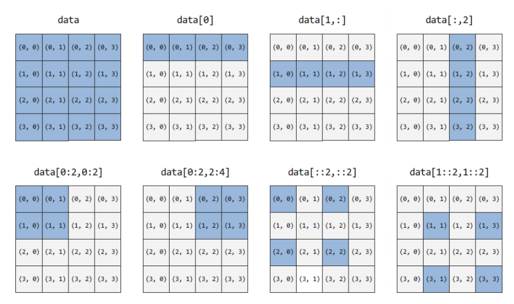
배열끼리의 연산¶
arr1 = np.array([[1, 2], [3, 4], [5, 6]])
arr2 = np.array([[1, 1], [1, 1], [1, 1]])
result = arr1 + arr2
result
# array([[2, 3],
# [4, 5],
# [6, 7]])
# 넘파이 배열에 + 연산 적용
브로드캐스팅¶
넘파이 곱셈¶
import numpy as np
arr1 = np.array([[1, 2], [3, 4], [5, 6]])
arr2 = np.array([[2, 2], [2, 2], [2, 2]])
res = arr1 * arr2
res
# array([[2, 4],
# [6, 8],
# [10, 12]])
행렬 곱셈¶
import numpy as np
arr1 = np.array([[1, 2, 3], [4, 5, 6], [7, 8, 9]])
arr2 = np.array([[2, 2], [2, 2], [2, 2]])
res = arr1 @ arr2
# arr1.dot(arr2)도 가능
res
# array([[12, 12],
# [30, 30],
# [48, 48]])
넘파이 배열 함수¶
import numpy as np
A = np.array([0, 1, 2, 3])
10 * np.sin(A)
# array([0. , 8.41470985, 9.09297427, 1.41120008])
# 넘파이의 sin() 함수를 적용하면 배열의 요소에 모두 sin() 함수가 적용
a = np.array([[1, 2, 3], [4, 5, 6], [7, 8, 9]])
a.sum()
# 45
a.min()
# 1
a.max()
# 9
특정 행 사용¶
import numpy as np
scores = np.array([[99, 93, 60], [98, 82, 93], [93, 65, 81], [78, 82, 81]])
scores.mean(axis = 0)
# array([92. , 80.5, 78.75])
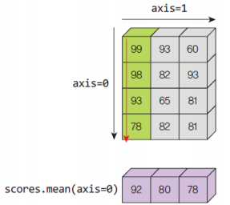
난수 생성¶
- 균일 분포
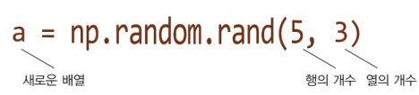
import numpy as np
np.random.seed(100)
np.random.rand(5)
# array([0.54340494, 0.27836939, 0.42451759, 0.84477613, 0.00471886])
np.random.rand(5, 3)
# array([[0.12156812, 0.67074908, 0.82585276],
# [0.13670659, 0.57509333, 0.89132195],
# [0.20920212, 0.18532822, 0.10837689],
# [0.21969749, 0.97862378, 0.81168315],
# [0.17194101, 0.81622475, 0.27407375]])
- 정규 분포
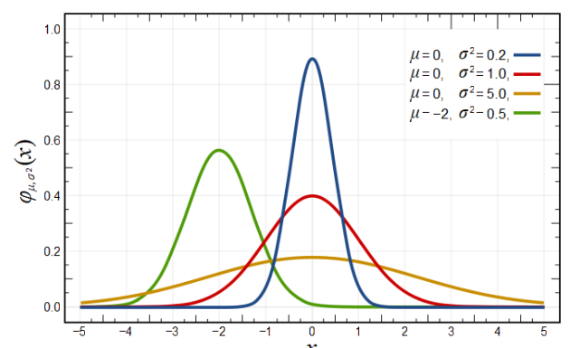
import numpy as np
np.random.randn(5)
# array([ 0.78148842, -0.65438103, 0.04117247, -0.20191691, -0.87081315])
np.random.randn(5, 4)
# array([[ 0.22893207, -0.40803994, -0.10392514, 1.56717879],
# [ 0.49702472, 1.15587233, 1.83861168, 1.53572662],
# [ 0.25499773, -0.84415725, -0.98294346, -0.30609783],
# [ 0.83850061, -1.69084816, 1.15117366, -1.02933685],
# [-0.51099219, -2.36027053, 0.10359513, 1.73881773]])
m, sigma = 10, 2
m + sigma*np.random.randn(5)
# array([ 8.56778091, 10.84543531, 9.77559704, 9.09052469, 9.48651379])
mu, sigma = 0, 0.1 # 평균과 표준 편차
np.random.normal(mu, sigma, 5)
# array([ 0.15040638, 0.06857496, -0.01460342, -0.01868375, -0.1467971 ])
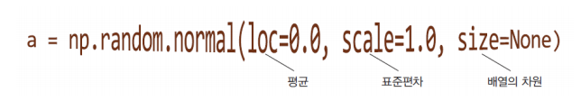
tensorflow에서의 tensor¶
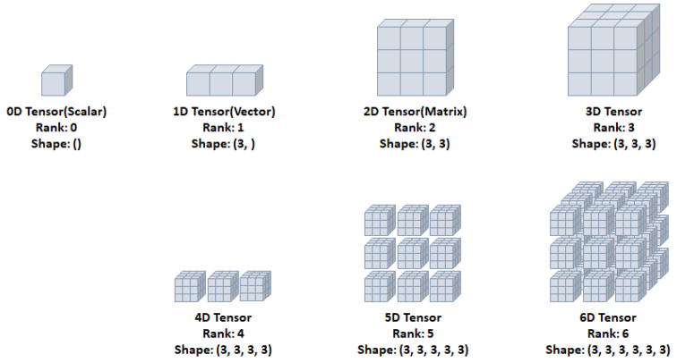
3절. Matplotlib¶
Matplotlib¶
- GNUplot처럼 그래프를 그리는 라이브러리
- 무료이며 오픈 소스
- 사용법
- 함수 호출 방식
- 객체 지향 방식
선 그래프¶
import matplotlib.pyplot as plt %matplotlib inline
X = [ "Mon", "Tue", "Wed", "Thur", "Fri", "Sat", "Sun" ]
Y1 = [15.6, 14.2, 16.3, 18.2, 17.1, 20.2, 22.4]
Y2 = [20.1, 23.1, 23.8, 25.9, 23.4, 25.1, 26.3]
plt.plot(X, Y1, label="Seoul")
plt.plot(X, Y2, label="Busan")
plt.xlabel("day")
plt.ylabel("temperature")
plt.legend(loc="upper left")
plt.title("Temperatures of Cities")
plt.show()
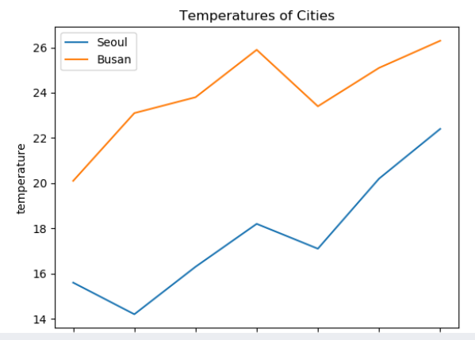
점 그래프¶
import matplotlib.pyplot as plt %matplotlib inline
X = [ "Mon", "Tue", "Wed", "Thur", "Fri", "Sat", "Sun" ]
plt.plot(X, [15.6, 14.2, 16.3, 18.2, 17.1, 20.2, 22.4], "sm")
plt.show()
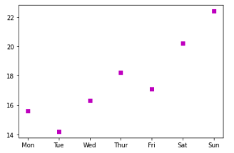
막대 그래프¶
import matplotlib.pyplot as plt %matplotlib inline
X = [ "Mon", "Tue", "Wed", "Thur", "Fri", "Sat", "Sun" ]
Y = [15.6, 14.2, 16.3, 18.2, 17.1, 20.2, 22.4]
plt.bar(X, Y)
plt.show()
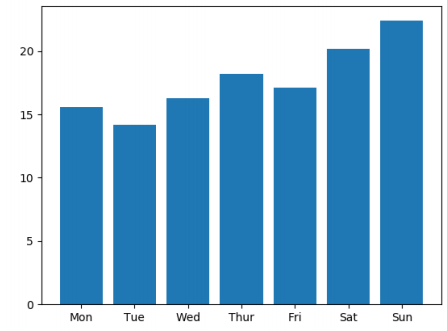
히스토그램¶
import matplotlib.pyplot as plt
import numpy as np
numbers = np.random.normal(size = 10000)
plt.hist(numbers)
plt.xlabel("value")
plt.ylabel("freq")
plt.show()
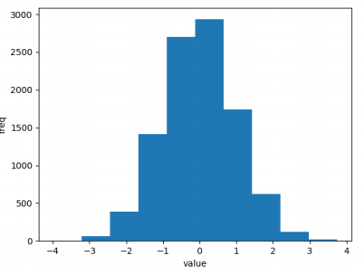
Numpy & Matplotlib¶
import matplotlib.pyplot as plt
import numpy as np
X = np.arange(0, 10)
Y1 = np.ones(10)
Y2 = X
Y3 = X**2
plt.plot(X, Y1, X, Y2, X, Y3)
plt.show()
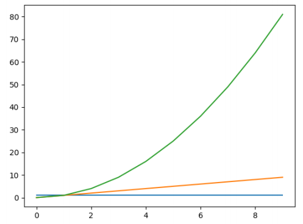
Lab 1 : 시그모이드 함수 미분값 계산¶
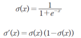
import matplotlib.pyplot as plt
import numpy as np
def sigmoid(x):
s = 1 / (1 + np.exp(-x))
ds = s*(1 - s)
return s,ds
# 시그모이드 1차 미분 함수
X = np.linspace(-10, 10, 100)
Y1, Y2 = sigmoid(X)
plt.plot(X, Y1, X, Y2)
plt.xlabel("x")
plt.ylabel("Sigmoid(X), Sigmoid'(X)")
plt.show()
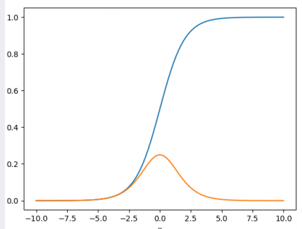